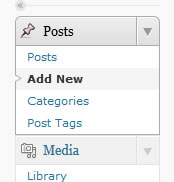
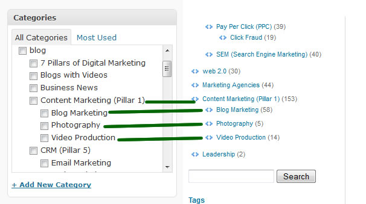

Thats it.

all posts on the site are made the same exact way. you will primarily be working off of that Posts Panel
clicking "posts" will display a list of all posts on the site. "Add new" will take you to a new window to create a new post.
"categories" will take you a page listing all the categories in the site, and you can add new categories.
"post tags" does the same thing, only listing out and letting you add new Tags.
categories are the various labels used to organize blog and news posts. Each category can have "child" categories. this is just a way to organize subjects.

for example, "content marketing" is a parent category, and it has 3 child categories. you will notice that child categories are always indented a little, this reflects how its listed
when making regular blog posts, just select whatever categories are appropriate. you can select as many or as few categories as you want in any order/combination.
the one thing to remember though... is that there are 4 categories reserved for the news section. we need to keep those categories seperate.(explaination below)
and there is a "home featured" category reserved for the home page slider. (explanation below)
outside of those categories... the blog posts can have any other tags/categories you want.
When you make a new "news" post, you have 4 check boxes to worry about.
Always select "NEWS" and then select the sub-section it belongs to.
what this is about, is that when you visit a news post like...
http://www.bluelinerny.com/news/b-labs-ajustco-shareholder-meeting.php
youll see how the page template is different from a blog post like...
http://www.bluelinerny.com/blog/recovering-from-panda-4-0.php
both of those posts were made the same exact way, the template will just show a different page depending on the categories you choose.
so when you want to make a news post, select ONLY the news category AND one of child categories (events, in the news, or latest news)
selecting one of the child categories will make sure the post link goes under the right heading onthe news page automatically
http://www.bluelinerny.com/news.php
so 'regular' blog posts should NEVER have one of the news section categories selected. as that will cause wordpress to use the news section template.
all that is, is that each "slide" is a simple wordpress post with ONE image in it. and the post has the "home featured" category selected.
thats it.
i recommend doing it like this.
some times we want to remove or replace an old featured image. its easy to find.
now youll just see a few of the "home featured" posts that populate the slider. from here you can delete or edit any outdated slider.